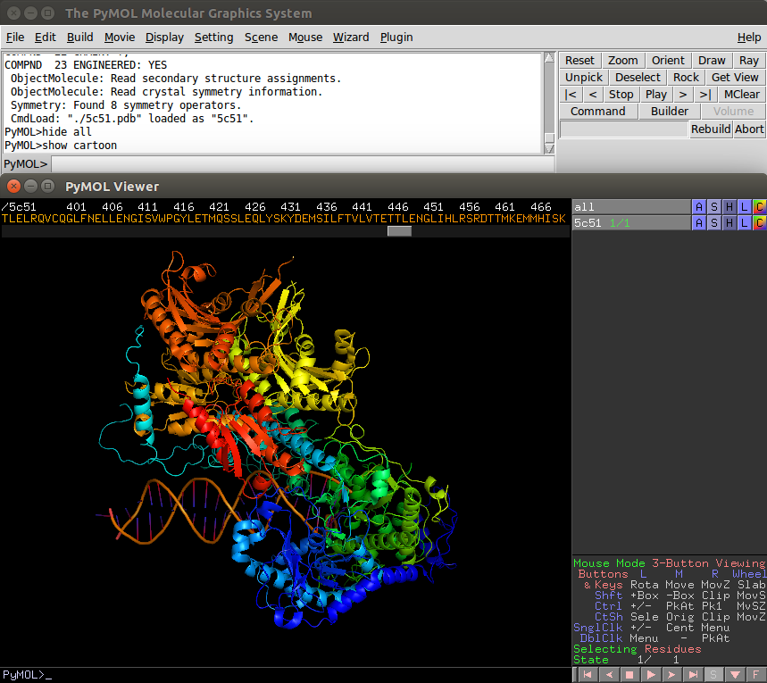

Getting Started
This is what you see when you first open ChimeraX. The top toolbar contains most of the basic functions you'll need to open a protein and visualize its structure.

The toolbar is divided into sections with shortcuts for quick actions. Each section is described below.
WRITE SOMETHING HERE
The Selection Matrix
This is a guide to the function of each button in the app. Each column represents a button on your mouse (Left, Middle, Right, and wheel). Each row represents a different key. Pairing them gives you whatever function is described on the matrix. Keep in mind that the first row represents the mouse click without pressing any key.
Clicking on the Mouse mode button allow you to switch between Viewing & Editing modes

Left
Rota - Free camera rotation
+ Box - Add atoms to the selection using a box
+/- - Toggle atom membership in the selection
Sele - Make a selection
+/- - Toggle atom membership in the selection
Menu - Activate context dependant menu
Middle
Move - Move camera on the XY plane
-Box - Remove atoms from the selection using a box
PkAt - Pick atoms in the molecular model
Orig - Set an origin (center) for the camera rotaion
Cent - Center the view on a given atom
- - No command assigned
Right
MovZ - Zoom
Clip - Move clipping planes
Pk1 - Pick one atom in the molecule
Clip - Move clipping planes
Menu - Activate context dependant menu
PkAt - Pick atom in the molecular model
Wheel
Slab - Adjust depth of the visible slab
MovS - Move the visible slab
MvSZ - Move the view center relative to the slab
Mov Z - Zoom

WRITE SOMETHING HERE 2
Commands and Controls
Default Mouse Controls
The Command Line
The Command Line gives you control over every aspect of the software. It allows you to skip the process of clicking through menus and finding buttons with predetermined scripts. Intead, it allows you to create your own.
Useful Commands
Fetching from RCSB PDB
# These all fetch the same structure open 2gbp # simplest — 4-char ID defaults to RCSB open 2gbp format pdb # force legacy PDB format open pdb:2gbp # explicit prefix syntax
Fetching from Other Sources
open emdb:3087 # EMDB electron density map open alphafold:P12345 # AlphaFold predicted structure (UniProt ID) open pubchem:2244 # PubChem 3D structure by CID open smiles:c1ccccc1 # build from SMILES string open iupac:aspirin # build from IUPAC name
Useful open Options
| Option | Description |
|---|---|
| format pdb | Force a specific file format (pdb, mmcif, sdf, etc.) |
| coordsets true | Load a multi-model file as a trajectory instead of separate models |
| ignoreCache true | Force re-download even if the file is already cached |
| name my-name | Assign a custom name to the loaded model |
Managing Models
close #1 # close model 1 close #2,4-6 # close models 2, 4, 5, 6 close # close everything info models # list all open models and their IDs save ~/session.cxs # save current session
View Command
The view command focuses and resets the camera — essential for quickly navigating to a specific part of a structure.
view # fit all models in view view #1 # focus on model 1 view /A:50-100 # zoom to residues 50-100 of chain A view orient # reset to standard orientation view name myview # save current view view myview 30 # restore saved view over 30 frames
Zoom, Turn & Move Commands
# Zoom zoom 2 # double the apparent size zoom 1.5 frames 20 # gradual zoom over 20 frames # Turn (rotate scene) turn y 1 360 # full 360° Y-axis rotation, 1° per frame turn x 90 # 90° around X axis stop # stop any ongoing animation # Move (translate scene) move x 5 # translate 5 Å along X move y -2 10 # translate -2 Å along Y over 10 frames
Selection is central to ChimeraX — almost every command accepts an atom specification to limit its scope. The syntax follows a hierarchy: #model / chain : residue @ atom.
The select Command
select # select everything select /A # select chain A select /A:50-100 # residues 50–100 in chain A select :lys,arg # all lysine and arginine residues select @ca # all alpha-carbon atoms select protein # all protein residues select ligand # all ligand molecules select helix # alpha-helix residues only ~select # deselect everything
Atom Specification Hierarchy
| Symbol | Level | Example |
|---|---|---|
| # | Model | #1, #2, #1,3-5 |
| / | Chain | /A, /B-D |
| : | Residue | :51, :12-25, :lys, :glu,arg |
| @ | Atom | @ca, @n,ca,c,o, @S* |
Combine them — #1/A:50@CA means: model 1, chain A, residue 50, CA atom.
Boolean Operators
# & = AND, | = OR, ~ = NOT select /A & protein # chain A protein only select helix & :arg,lys # Arg/Lys residues in helices select ~protein # everything except protein select ligand | solvent # ligand OR solvent
Distance-Based Selection
# Select residues within 4.5 Å of ligand select zone ligand 4.5 protein residues true # Inline zone syntax select ligand :< 5 & protein # protein atoms within 5 Å of ligand
sel is a built-in reference to your current selection and works anywhere an atom spec is accepted — e.g. color sel red or show sel atoms.
ChimeraX has three main visual representations: cartoon (ribbon), surface, and atoms/bonds. Each can be shown independently and styled per-atom, residue, or model.
Cartoon (Ribbon)
cartoon # show cartoon for all cartoon #1 # cartoon for model 1 only ~cartoon # hide all cartoons # Styling cartoon style helix width 1.5 thickness 0.3 cartoon style strand xsection rectangle width 2 cartoon style protein modeHelix tube # tube-style helices
Molecular Surface
surface #1 # surface for model 1 surface #1 transparency 50 # 50% transparent surface surface enclose #1 # one unified surface for all chains ~surface # hide surfaces surface style #1 mesh # switch to mesh display
Atoms & Bonds
show #1 atoms # show atoms for model 1 hide atoms # hide all atoms # style: sphere (CPK), stick, or ball (ball-and-stick) style sphere # space-filling CPK style stick # stick model style ligand ball # ball-and-stick for ligand style sel sphere # space-filling for current selection
Show / Hide with Targets
The target keyword lets you control exactly which representation a show/hide applies to using letter codes: a (atoms), c (cartoons), s (surfaces), m (models).
show target acs # show atoms + cartoons + surfaces hide /b-d cartoons # hide cartoon for chains B–D only hide #1 surfaces # hide surfaces on model 1
Common Representation Combos
# Cartoon with ligand in ball-and-stick cartoon; hide atoms; show ligand atoms; style ligand ball # Transparent surface over cartoon cartoon; surface #1 transparency 60 # All-atom stick model show atoms; hide cartoons; style stick
The color command handles everything from simple named colors to rainbow schemes, B-factor gradients, and electrostatic surfaces. The target string controls which representation gets colored.
Simple Coloring
color red # color everything red color #1 dodger blue # color model 1 color /A:12,260-275 hot pink atoms # specific atoms only color sel cornflower blue # color current selection
Scheme-Based Coloring
color byelement # Jmol periodic-table colors color byhetero # element colors, leave carbon unchanged color bychain # distinct color per chain color bymodel # distinct color per model color fromatoms # match surface colors to atoms
Rainbow Coloring
rainbow # rainbow by residue (blue → red) rainbow chains # one color per chain rainbow :1-50 # rainbow only residues 1–50 rainbow palette cornflowerblue:red:gold
Coloring by B-Factor or Attribute
color bfactor /A range 2,30 # B-factor gradient for chain A color bfactor protein palette rainbow # rainbow B-factor color electrostatic #1 map #2 palette redblue range -10,10
Transparency
color #1 red transparency 50 transparency 40 target s # set surface transparency independently
The Morph Function
The morph command interpolates atomic coordinates between two or more structures to create a smooth animated trajectory — ideal for showing open/closed states, ligand-induced changes, and domain movements.
Frames
Command Syntax
morph #1 #2 frames 30 method corkscrew rate sinusoidal
Parameters Reference
| Parameter | Description |
|---|---|
| frames N | Number of interpolated frames. Higher = smoother but larger. Default: 20 |
| wrap true|false | If true, loops back to the first structure for cyclic animations |
| method linear|corkscrew | corkscrew follows helical paths — more realistic for rotations. Default: corkscrew |
| rate linear|sinusoidal|ramp up|ramp down | Controls pacing. sinusoidal gives smooth ease-in/out. Default: linear |
| cartesian true|false | Interpolate in Cartesian space — helps with large conformational changes |
| same true|false | Skip alignment if structures are already atom-paired |
| core_fraction 0–1 | Fraction of atoms used as rigid core for alignment during interpolation |
Morph Walkthrough
This walkthrough uses Adenylate Kinase (1AKE → 4AKE) as the working example.
Fetch the Structures
open 1AKE open 4AKE info models # confirm they loaded as #1 and #2
Align the Structures
matchmaker #2 to #1 # superpose #2 onto #1
Run the Morph
ChimeraX creates a new model (usually #3) containing the trajectory.
morph #1 #2 frames 30 method corkscrew rate sinusoidal
Hide Original Structures
hide #1,#2 models show #3 models
Style & Play
cartoon #3 color #3 bychain coordset #3 play true loop true maxFrameRate 25
Export as Video (Optional)
movie record coordset #3 play true movie encode ~/morph_output.mp4
Useful Utility Commands
coordset #3 15 # jump to frame 15 coordset #3 pause # stop playback close #3 # delete morph model log clear # clear the command log undo # undo last command help morph # open morph docs in browser
Downloadable Materials
Individual models and Ready-to-run .cxc ChimeraX scripts — open them via File → Open or drag onto the ChimeraX window. Each script fetches, aligns, morphs, styles, and plays automatically.